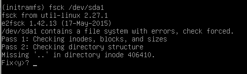
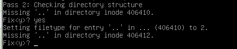

环境
VMWare Workstation 12 PRO
Ubuntu-16.04-desktop-amd64
背景
用VMWare安装了Ubuntu之后，不用时都是让其处在挂载模式。昨天脑残在系统内重启了一下，发现卡在Ubuntu
下面四个点的那个界面，四个点一直跳，可是就是进不去系统，打了一把LOL回来看看还是没进去，于是乎用VMWare
强行重启，然后就进入了今天的主题，直接进入黑屏命令行了，如下图：
解决方案
同学推荐我这个帖子引导异常导致无法正常开机，感觉很有道理，但是并不能解决我的问题。
于是找班里大神help，大神说文件系统损坏，根据上图的提示信息，大神给的解决方案如下：
1 | fsck /dev/sda1 |

然后一路y下去

大概y了n次之后，出现FILE SYSTEM WAS MODIFIED，文件系统修复成功了

然后执行reboot重启，终于又能看见Ubuntu这可爱的界面了！
赶紧补一波fsck命令的含义，执行man fsck进入其使用手册

后记
如果你也由于误操作或者莫名奇妙的进入了initramfs模式而本方法无法解决，那么可以试试开头提到的那个帖子里的
解决办法。
另外，虚拟机备份真的很重要啊！VMWare可通过虚拟机->快照->拍摄快照，进行备份。